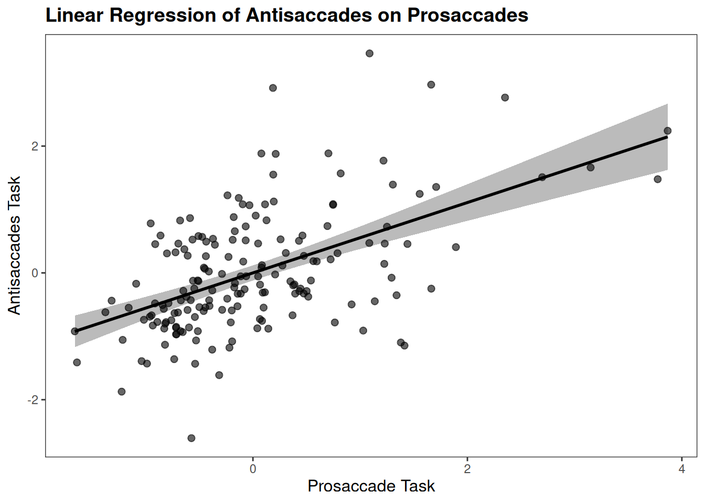

library(scales) # For percent formattinglibrary(jtools) # For theme_apa and apa.reg.tablelibrary(tidyverse) # For data manipulation and ggplot
── Attaching core tidyverse packages ──────────────────────── tidyverse 2.0.0 ──
✔ dplyr 1.1.4 ✔ readr 2.1.5
✔ forcats 1.0.0 ✔ stringr 1.5.1
✔ ggplot2 3.5.2 ✔ tibble 3.2.1
✔ lubridate 1.9.4 ✔ tidyr 1.3.1
✔ purrr 1.0.4
── Conflicts ────────────────────────────────────────── tidyverse_conflicts() ──
✖ readr::col_factor() masks scales::col_factor()
✖ purrr::discard() masks scales::discard()
✖ dplyr::filter() masks stats::filter()
✖ dplyr::lag() masks stats::lag()
ℹ Use the conflicted package (<http://conflicted.r-lib.org/>) to force all conflicts to become errors
library(broom) # For tidy model outputslibrary(psych) # For descriptives
Attaching package: 'psych'
The following objects are masked from 'package:ggplot2':
%+%, alpha
The following objects are masked from 'package:scales':
alpha, rescale
library(car) # For assumption tests
Loading required package: carData
Attaching package: 'car'
The following object is masked from 'package:psych':
logit
The following object is masked from 'package:dplyr':
recode
The following object is masked from 'package:purrr':
some
library(robustbase) # For robust regressionlibrary(boot) # For bootstrapping
Attaching package: 'boot'
The following object is masked from 'package:robustbase':
salinity
The following object is masked from 'package:car':
logit
The following object is masked from 'package:psych':
logit
library(apaTables) # For APA table exportlibrary(ggplot2) # For plottinglibrary(patchwork) # For combining plots
rou_rep <-read_csv("saccades_factor.csv")
Rows: 175 Columns: 5
── Column specification ────────────────────────────────────────────────────────
Delimiter: ","
chr (1): PART_ID
dbl (4): anti, pro, diff, inspection_time
ℹ Use `spec()` to retrieve the full column specification for this data.
ℹ Specify the column types or set `show_col_types = FALSE` to quiet this message.
# Assume rou_rep is your data frame with columns "pro" and "anti"# Descriptive statisticsdescriptives <- psych::describe(rou_rep[, c("pro", "anti")], fast =TRUE)print(descriptives) # Means, SDs, min/max
vars n mean sd median min max range skew kurtosis se
pro 1 175 0 0.91 -0.17 -1.66 3.87 5.53 1.44 3.15 0.07
anti 2 175 0 0.94 -0.18 -2.61 3.46 6.07 0.83 1.27 0.07
# Original OLS regressionmodel <-lm(anti ~ pro, data = rou_rep)model_summary <-summary(model)model_tidy <-tidy(model)model_glance <-glance(model)conf_int <-confint(model, level =0.95)# Print OLS resultsprint(model_summary)
Call:
lm(formula = anti ~ pro, data = rou_rep)
Residuals:
Min 1Q Median 3Q Max
-2.2879 -0.4882 -0.1269 0.4349 2.8583
Coefficients:
Estimate Std. Error t value Pr(>|t|)
(Intercept) -2.570e-16 6.053e-02 0.000 1
pro 5.549e-01 6.668e-02 8.322 2.5e-14 ***
---
Signif. codes: 0 '***' 0.001 '**' 0.01 '*' 0.05 '.' 0.1 ' ' 1
Residual standard error: 0.8007 on 173 degrees of freedom
Multiple R-squared: 0.2859, Adjusted R-squared: 0.2818
F-statistic: 69.26 on 1 and 173 DF, p-value: 2.503e-14
# Bootstrapped CI for slope (non-parametric, 1000 resamples)boot_reg <-function(data, indices) { d <- data[indices, ]coef(lm(anti ~ pro, data = d))[2] # Slope only}boot_results <-boot(rou_rep, boot_reg, R =1000)boot_ci <-boot.ci(boot_results, type ="bca")cat("\nBootstrapped 95% CI for slope:", boot_ci$bca[4], "to", boot_ci$bca[5], "\n")
Bootstrapped 95% CI for slope: 0.4340568 to 0.700177
# APA-style table (exports to Word for both OLS and robust if desired; here for OLS)apa.reg.table(model, filename ="ols_regression_table.doc")
Regression results using anti as the criterion
Predictor b b_95%_CI beta beta_95%_CI sr2 sr2_95%_CI r
(Intercept) -0.00 [-0.12, 0.12]
pro 0.55** [0.42, 0.69] 0.53 [0.41, 0.66] .29 [.18, .38] .53**
Fit
R2 = .286**
95% CI[.18,.38]
Note. A significant b-weight indicates the beta-weight and semi-partial correlation are also significant.
b represents unstandardized regression weights. beta indicates the standardized regression weights.
sr2 represents the semi-partial correlation squared. r represents the zero-order correlation.
Square brackets are used to enclose the lower and upper limits of a confidence interval.
* indicates p < .05. ** indicates p < .01.
# Visualization (APA-style plot)ggplot(rou_rep, aes(x = pro, y = anti)) +geom_smooth(method ="lm", se =TRUE, color ="black", fill ="gray70", alpha =0.9) +geom_point(alpha =0.6, size =2, color ="black") +labs(x ="Prosaccade Task", y ="Antisaccades Task", title ="Linear Regression of Antisaccades on Prosaccades") +theme_apa() # Use minimal theme if theme_apa not available
`geom_smooth()` using formula = 'y ~ x'

ggsave("regression_plot.png") # Save plot as PNG
Saving 7 x 5 in image
`geom_smooth()` using formula = 'y ~ x'
# Augment data with residuals and fitted valuesaug_data <-augment(model)# Residuals vs. Fitted (for homoscedasticity)p1 <-ggplot(aug_data, aes(x = .fitted, y = .resid)) +geom_smooth(method ="loess", se =FALSE, color ="#009e73", linewidth=2) +geom_point(color ="black", size =2, alpha=0.6) +geom_hline(yintercept =0, linetype ="dashed", color ="black") +labs(title ="Residuals vs. Fitted Values", x ="Fitted Values", y ="Residuals") +theme_apa()# Q-Q Plot (for normality)p2 <-ggplot(aug_data, aes(sample = .resid)) +stat_qq_line(color ="#009e73", linewidth =2) +stat_qq(color ="black", size =2, alpha =0.6) +labs(title ="Normal Q-Q Plot of Residuals", x ="Theoretical Quantiles", y ="Sample Quantiles") +theme_apa()# Merge into single plot with labels (APA: use as Figure 1 with subparts)combined <- p1 + p2 +plot_annotation(tag_levels ="A", # Sub-labels: (A) and (B)theme =theme_apa() ) &theme_apa() # Bold sub-labels# Display (or ggsave(combined, filename = "fig1.png", width = 10, height = 5, dpi = 300))print(combined)